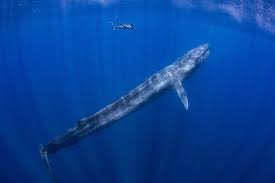

Fish are incredibly diverse aquatic creatures that inhabit almost every water body on Earth, from the deepest ocean trenches to high mountain streams. They come in an astonishing array of shapes, sizes, and colors, showcasing nature's remarkable adaptability. Fish play a crucial role in the ecosystem as both predators and prey, helping to maintain the balance of aquatic life. Their gills allow them to extract oxygen from water, a unique adaptation that sets them apart from other animals. Some fish, like salmon, are known for their extraordinary migratory journeys, while others, like the colorful clownfish, form symbiotic relationships with sea anemones. Fish are also vital to human cultures worldwide, serving as a major food source and even appearing in art, folklore, and mythology.
